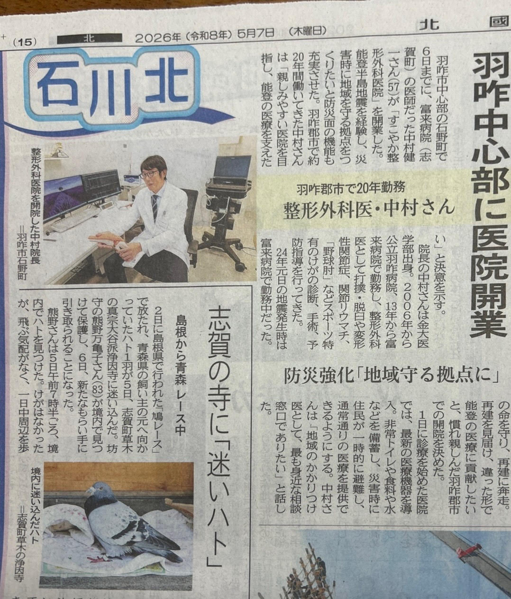
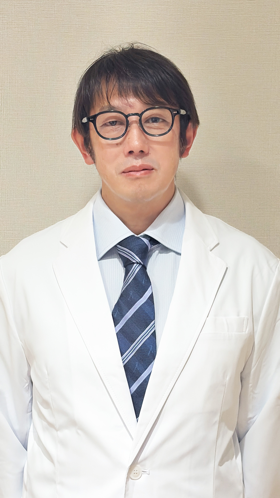

羽咋中心部に医院開業
防災強化「地域守る拠点に」

2026年5月7日 北國新聞掲載 記事を読む
2026年5月7日付の北國新聞（石川北版）に、当院の開業についての記事が掲載されました。

院長 中村 健一
北國新聞様に取材していただきました。能登の震災や豪雨を経験し、災害時にも継続できる医療体制の重要性を痛感しております。当院は防災機能を備え、拠点病院と連携して地域の皆様のお役に立てるように努めてまいります。